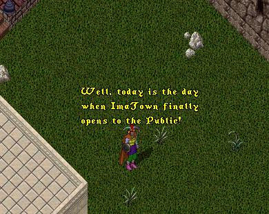
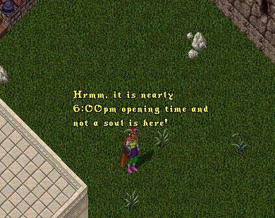
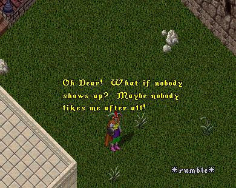
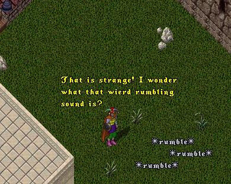
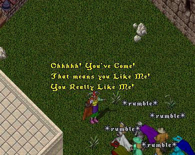
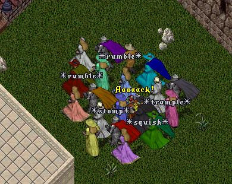
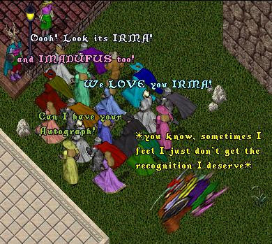

Episode 120: I Don't Get No Respect! - It's twenty minutes to the opening of ImaTown as ImaNewbie stands nervously in the town square awaiting the crowds he is sure will flock to see the new town. But wait, where is everyone? What if they gave a town opening and nobody came? This doth not bode well! Read on.






